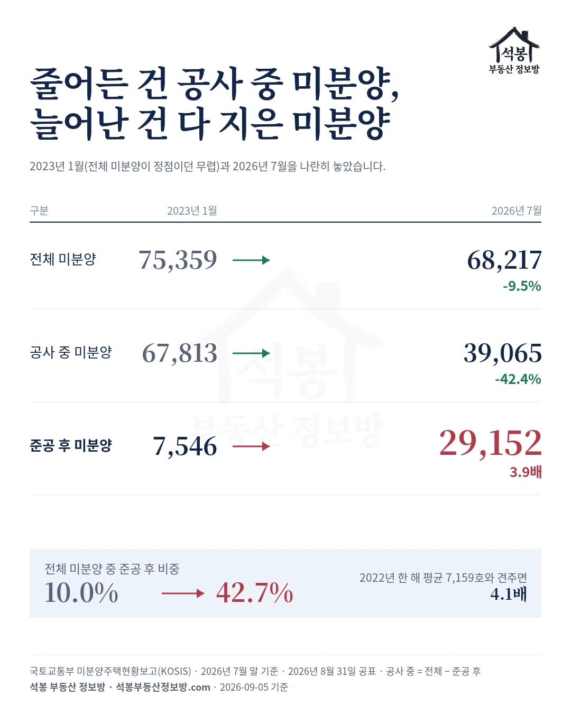
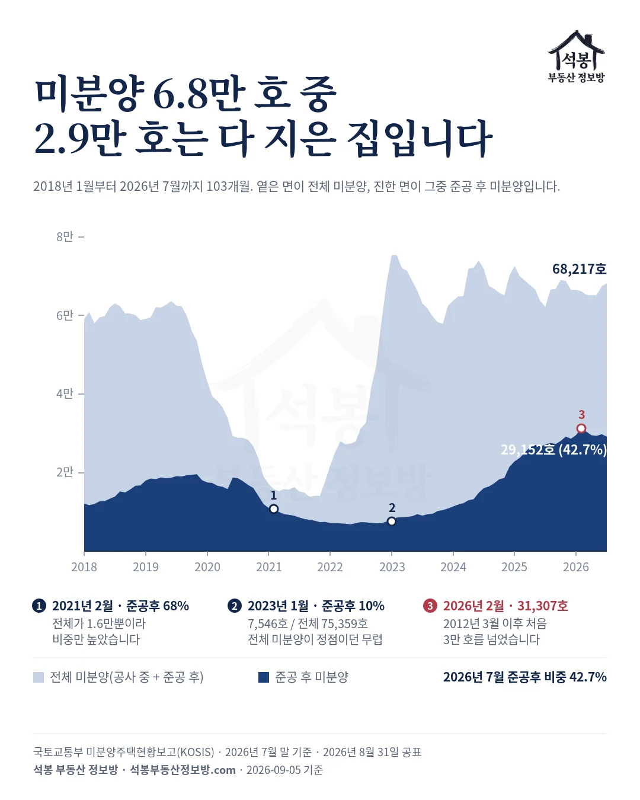
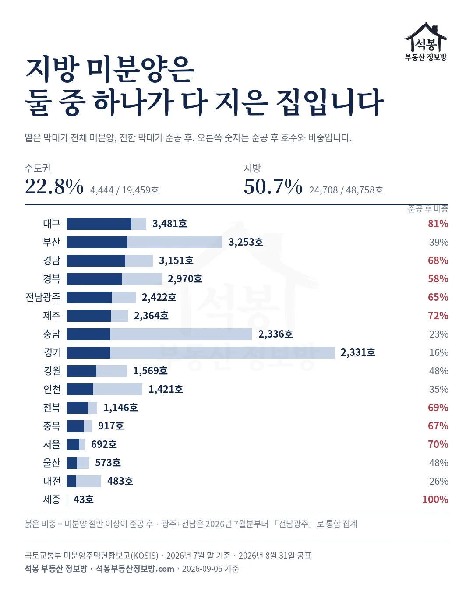
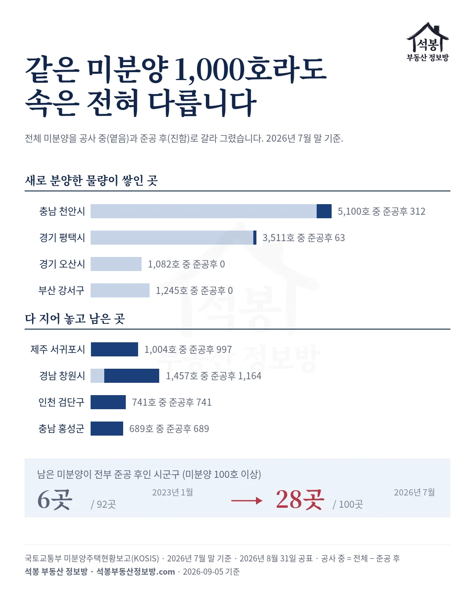

국토교통부가 2026년 8월 31일 공표한 7월 말 전국 미분양은 68,217호입니다. 미분양이 7만 5천 호를 넘던 2023년 1월(75,359호)보다 9.5% 적은 숫자라, 헤드라인만 보면 "미분양이 줄었다"로 읽힙니다.
그런데 같은 통계에 줄이 하나 더 있습니다. 공사가 끝났는데도 안 팔린 준공 후 미분양이 29,152호, 2022년 한 해 평균 7,159호의 4.1배입니다. 2018년 1월부터 2026년 7월까지 103개월, 시군구 230곳 자료를 두 줄로 갈라 봤습니다.
하나. 미분양에는 두 종류가 있습니다
국토교통부 미분양 통계는 분양 승인을 받아 분양했는데 계약이 안 된 집을 셉니다. 여기서 공사 중인 집과 다 지은 집은 성격이 다릅니다.
공사 중이면 입주까지 시간이 있어 그 사이 계약자가 붙을 수 있습니다. 다 지은 뒤에도 안 팔렸다면 사업주체가 이자와 관리비를 안고 재고를 들고 있는 상태라, 시장에서는 '악성 미분양'이라 부릅니다. 이 글에서는 전체에서 준공 후를 뺀 것을 공사 중 미분양이라 부르겠습니다.
가입하시면 지역 시장조사 보고서(약식)를 2회 무료로 요청하실 수 있습니다.
둘. 3년 반 동안 숫자 셋이 이렇게 움직였습니다
2023년 1월과 2026년 7월을 나란히 놓습니다. 전체 미분양은 75,359호에서 68,217호로 9.5% 줄었습니다. 여기까지는 아는 이야기입니다.
그 안에서 공사 중 미분양은 67,813호에서 39,065호로 42.4% 줄었고, 준공 후 미분양은 7,546호에서 29,152호로 3.9배가 됐습니다. 전체가 조금 준 것은 한쪽이 크게 줄고 다른 쪽이 크게 늘어 서로 상쇄된 결과입니다.
비중으로 보면 10.0%에서 42.7%입니다. 2023년 1월에는 미분양 열 채 중 한 채가 다 지은 집이었고, 2026년 7월에는 열 채 중 넷이 넘습니다.

준공 후 미분양은 2022년 열두 달 내내 6,830호에서 7,518호 사이에 있었습니다. 그 해 평균 7,159호를 바닥으로 잡으면 4.1배, 2023년 1월 값을 잡으면 3.9배입니다.
고점은 2026년 2월 31,307호였습니다. 준공 후 미분양이 3만 호를 넘은 것은 2012년 3월(30,438호) 이후 처음입니다. 그 뒤 2026년 3월부터 7월까지 다섯 달은 29,152호에서 30,429호 사이를 오가며 고점 아래에 머물러 있습니다.

한 가지 짚을 것이 있습니다. 준공 후 비중은 2021년 2월에 68.3%까지 오른 적이 있습니다. 그때는 전체 미분양이 15,786호로 바닥이었고 준공 후는 10,779호였으니, 분모가 줄어서 비중이 오른 것입니다.
지금은 반대입니다. 전체 미분양은 2023년 1월 이후 57,925호에서 75,438호 사이를 오르내리며 6만 호 안팎에 머물렀는데, 준공 후만 네 배가 됐습니다. 분자가 늘어서 비중이 오른 것이라, 같은 40%대라도 뜻이 다릅니다.
셋. 지방은 절반, 수도권은 넷 중 하나
2026년 7월 수도권 미분양 19,459호 중 준공 후는 4,444호, 22.8%입니다. 지방은 48,758호 중 24,708호, 50.7%입니다. 지방 미분양은 둘 중 하나가 다 지은 집입니다.
시도별 준공 후 미분양은 대구가 3,481호로 가장 많습니다. 대구 전체 미분양이 4,278호이니 81.4%가 다 지은 집입니다.
2023년 1월 대구 미분양은 13,565호였고 그중 준공 후는 277호였습니다. 3년 반 사이 미분양은 3분의 1 아래로 줄었는데, 그 사이 공사가 끝난 물량이 준공 후 재고로 넘어온 것입니다. 다만 대구 준공 후는 2026년 2월 4,296호가 고점이었고, 7월은 그보다 815호 적습니다.
| 시도 | 2023년 1월 준공 후 | 2026년 7월 준공 후 | 늘어난 호수 |
|---|---|---|---|
| 대구 | 277호 | 3,481호 | +3,204호 |
| 부산 | 926호 | 3,253호 | +2,327호 |
| 경남 | 686호 | 3,151호 | +2,465호 |
| 경북 | 888호 | 2,970호 | +2,082호 |
| 전남광주 | 961호 | 2,422호 | +1,461호 |
| 제주 | 698호 | 2,364호 | +1,666호 |
부산은 3,253호로 둘째지만 비중은 38.8%입니다. 부산 미분양 8,379호 중 5,126호가 아직 공사 중이라, 앞으로 준공 후로 넘어올 물량이 남아 있다는 뜻이기도 합니다.
경기는 미분양 14,394호로 전국에서 가장 많지만 준공 후는 2,331호, 16.2%입니다. 충남도 9,982호 중 2,336호, 23.4%입니다. 두 곳은 새로 분양한 물량이 쌓인 곳입니다.

넷. 같은 미분양 1,000호라도 속이 다릅니다
시군구로 내려가면 갈림이 더 또렷합니다. 천안은 미분양 5,100호로 전국 1위인데 준공 후는 312호, 6.1%뿐입니다. 2026년 1월 2,614호에서 7월 5,100호로 반년 새 두 배 가까이 늘었고, 늘어난 것은 거의 전부 공사 중 물량입니다.
오산은 2026년 6월 31호에서 7월 1,082호로 한 달 만에 뛰었고 준공 후는 0입니다. 평택 3,511호 중 준공 후는 63호입니다. 세 곳 다 아직 공사 중인 물량이라 지금 숫자가 크다고 바로 재고로 굳은 것은 아니지만, 공사가 끝나는 순간 준공 후로 넘어옵니다.
반대편에는 다 지어 놓고 남은 곳이 있습니다. 제주시 1,367호, 포항 1,248호, 창원 1,164호, 준공 후 미분양이 1,000호를 넘는 시군구는 이 셋뿐입니다. 서귀포는 미분양 1,004호 중 997호가 준공 후입니다.
포항이 눈에 띕니다. 포항 미분양은 2023년 1월 5,933호에서 2026년 7월 2,041호로 3분의 1 수준이 됐습니다. 그런데 준공 후는 같은 기간 46호에서 1,248호가 됐으니, "미분양이 줄었다"는 말이 포항에서는 "공사가 끝났다"는 뜻이었습니다.
남은 미분양이 전부 준공 후인 시군구도 늘었습니다. 미분양 100호 이상인 시군구 가운데 공사 중 물량이 하나도 없는 곳이 2023년 1월 6곳에서 2026년 7월 28곳이 됐습니다. 인천 검단구 741호, 충남 홍성군 689호, 충북 음성군 634호, 전북 익산시 558호가 그렇습니다.

이 숫자를 어떻게 읽을까
미분양 통계는 사업주체가 지자체에 신고한 것을 모은 자료라, 신고하지 않은 물량은 잡히지 않습니다. 그 한계를 안고 보더라도 방향은 분명합니다. 전체 미분양이 6만 호 안팎에서 제자리인 3년 반 동안, 그 구성은 '아직 짓는 중'에서 '다 지어 놓고 못 판'으로 바뀌었습니다.
준공 후 미분양은 할인 분양과 임대 전환, 공공 매입의 대상이 되는 물량입니다. 그 동네 새 아파트 값의 아래쪽 기준선이 되기 쉬운 물량이기도 합니다.
다음 편에서는 같은 자료로 지역을 봅니다. 전국 미분양이 2025년 7월보다 9.6% 늘어난 뒤에서 어느 시군구가 쌓고 어느 시군구가 털었는지, 그 자리바꿈입니다.
원자료: 국토교통부 「미분양주택현황보고」 시군구별·공사완료후 미분양(KOSIS), 2018년 1월~2026년 7월 월별, 시군구 230곳. 기준 2026년 7월 말(2026년 8월 31일 공표)
전체 미분양은 시도 합계, 준공 후는 국토부 전국 합계이며 공사 중은 전체에서 준공 후를 뺀 값입니다. 광주와 전남은 2026년 7월분부터 「전남광주」로 통합돼 2023년 1월 값은 두 시도를 더했습니다
2012년 3월 30,438호는 국토부 통계누리 기준 언론 보도(2026년 3월 31일)를 인용했습니다
⚠️미분양은 사업주체 신고 자료라 신고되지 않은 물량은 잡히지 않습니다. 투자 권유가 아닙니다.